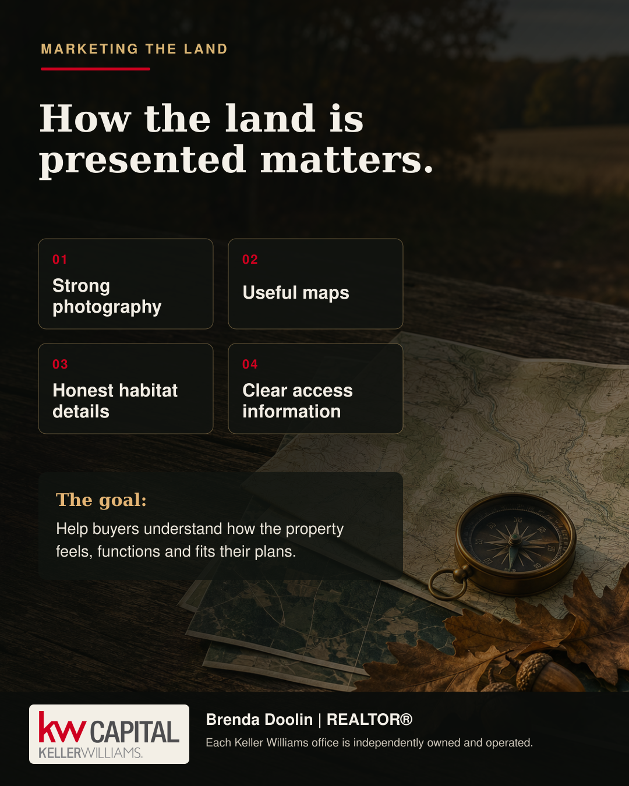
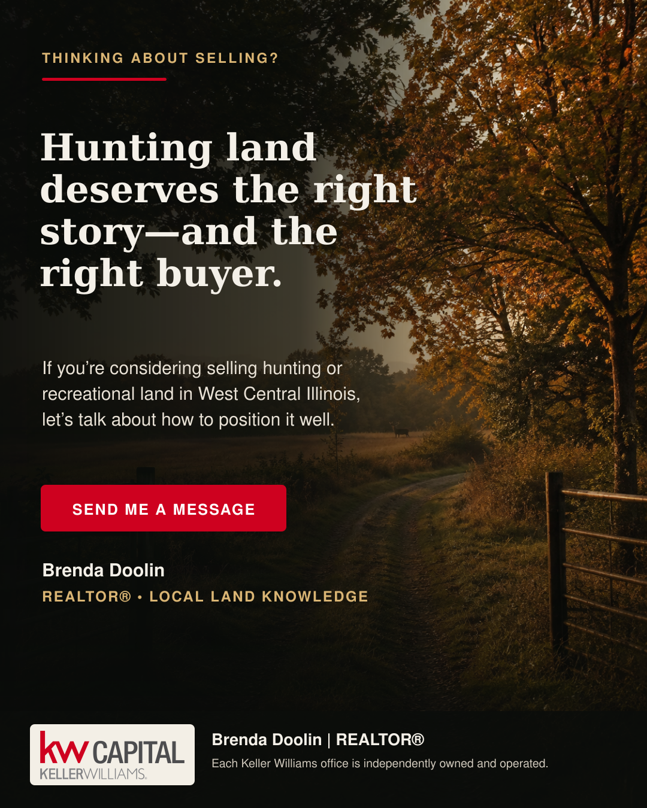

Homes & Residential
A move that fits your real lifeFrom first homes and family homes to historic properties and city neighborhoods.
West-central & central Illinois
Buying or selling real estate is about more than a property—it’s about what comes next.
I help buyers and sellers across west-central and central Illinois navigate that next move with local knowledge, thoughtful guidance, and a personal approach. From homes in town and country acreage to farms, land, estates, and equestrian properties, every property deserves a strategy that fits the people and the place.
Buying · Selling · Residential · Farm & Land · Estates · Equestrian
Property, understood
Some properties need a different vocabulary—and a different eye. These are the areas I’m intentionally building my practice around.
From first homes and family homes to historic properties and city neighborhoods.
Working farms, recreational ground, buildable acreage and country homes with room to breathe.
Commercial buildings, retail, office, mixed-use property, investment real estate and development opportunities.
Privacy, architecture, craftsmanship, acreage, historic character and exceptional settings.
Pasture, fencing, barns, arenas, turnout, water and access considered as a complete system.

Farm, land & acreage
Access, terrain, improvements, water, fencing, habitat and how the property actually functions can matter just as much as acreage and price. Good marketing helps buyers understand the whole property—not merely the headline numbers.
Talk about selling land →For property owners
Every property has a story. The marketing should reflect it.
Whether you’re thinking about selling next month or simply wondering what the path might look like, the best first step is a grounded conversation—without pressure and without assumptions.
Start a seller conversation
Places Brenda serves
From the roads I know by heart to the city markets where I’m deliberately building connections, I serve clients across west-central and central Illinois.
Deep local familiarity and the strongest day-to-day knowledge.
Small cities, country communities and regional markets connected by real relationships.
City neighborhoods, executive homes and the rural communities surrounding Illinois’ capital.
Meet Brenda Doolin
I’m a lifelong Schuyler County resident, former business owner, farm girl, horse lover, mother of four and grandmother. I bring more than 25 years of real-world business experience—and I believe people deserve clear answers, honest guidance and room to make their own decisions.
That background gives me a practical eye for property, negotiations, land, improvements, business decisions and the details that can easily get overlooked.
A conversation is a good place to begin